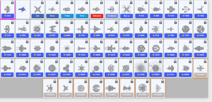

There are 115 pursuable skins in defly.io. Here is a screenshot of some. 
The first skin is the holiday skin, which is exclusive to the season. The orange skins on the bottom require purchasing all the skins in one catergory to obtain. You can also get some more skins in Defly by purchasing premium for $5, and also gives you an exclusive discord role, vanity badges, no ads.
Just like making defuse maps, there is also a defly io skin editor. You have to import skins from another platform where you design both the rotor and the body. The skin editor is mainly used for the skin contest, which gives a prize skin to the elite season winner.
The skins are used for every game mode other than defuse.